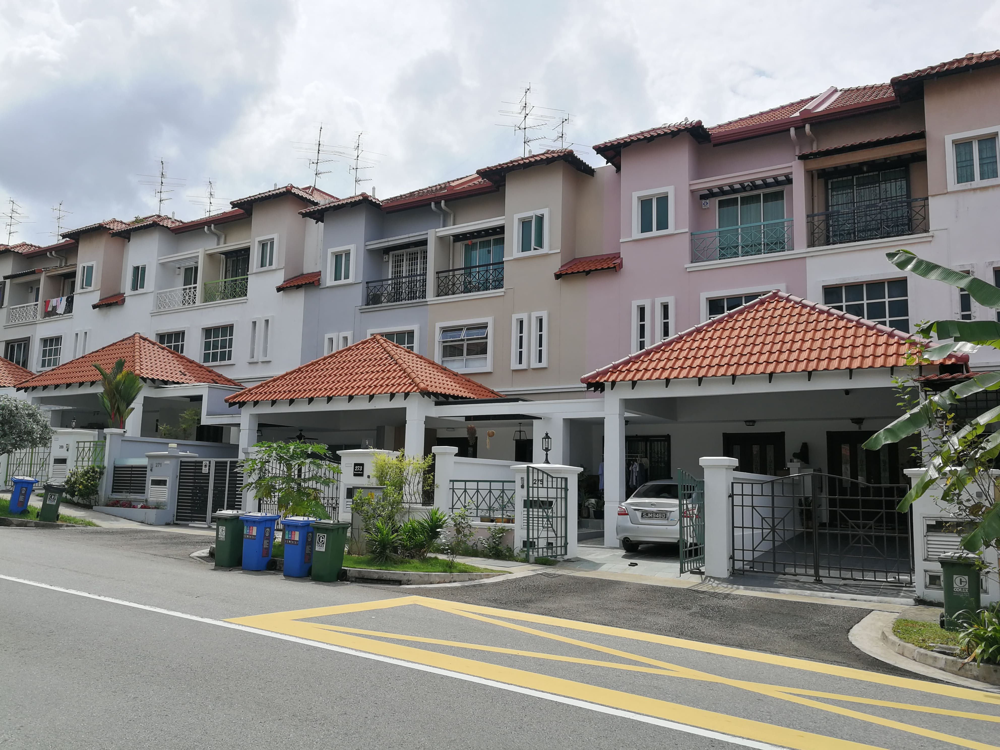
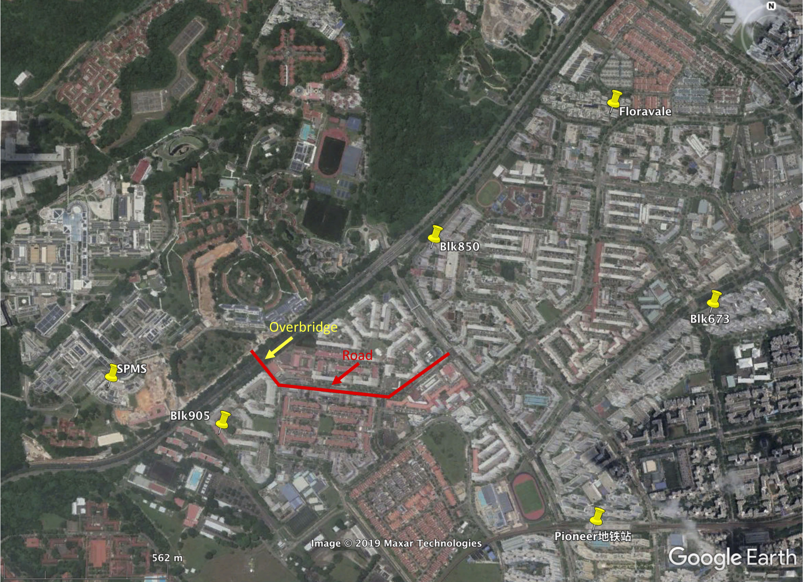

留新个人日常生活
文章目录
可以关注一下微信公众号以及小程序，了解在新加坡生活的需要有用信息。
- 新加坡眼: 很多新加坡生活信息
- 新加坡万事通：很多新加坡生活相关信息
- 新加坡便民：比较好的新加坡生活助手
- 南洋理工小助手：NTU相关信息
租房
简介
新加坡房屋大概有4类：
- 政府组屋(HDB)：大多数新加坡人住房，一般没有门卫、健身房、泳池等。
- 公寓(Condo)：一般都有门卫、健身房、泳池。
- 排屋(Terrace)：独门不独栋的联排别墅。
- 独栋别墅(Landed property)
组屋:
公寓:
排屋: 
一般出租的都是组屋和公寓，房间分为主卧(Master Room)和普通房(Common Romm)。主卧一般有独立卫生间，普通房通常要和别人共用卫生间。新加坡存在大量的中国二房东赚取房间差价，租屋主和二房东的房间各有利弊，需要好好权衡，注意二房东在新加坡是违法的哦。可以尝试跟房东还价，试试看呗~
租房的时候一定要跟房东讲清楚各种事宜，如果能签合同是最保险的，这里有一份合同模板可以参考一下。如果需要合法文件证明你和房东之间的租赁关系，可以花钱办理Certificate of Stamp Duty，详情请参考印花税。
以下注意事项可以参考:
- 水、电、汽、网、空调等是否包含在房租内。
- 是否可以做饭，一般租单间是不让做饭的。
- 洗衣机的使用情况。如果跟房东一块住的话，一周自己可以用几次洗衣机。
- 是否可以让家人、朋友偶尔来住。
NTU学生宿舍可以参考微信公众号南洋理工小助手
租房渠道
- 微信小程序:
小坡岛新加坡租房 - 网站
- NTU Housing：适用于NTU的faculty和学生
- Off-Campus Housing: 适用于NTU的学生
- PropertyGuru: 新加坡本地发布平台，房源信息发布是最多的，信息筛选条件多。多为中介发布，有中介费。可下载app
- nestia: 新加坡本地发布平台，房源多，可以以某一建筑为中心从远及近的搜索房源。可下载app，自带的导航也不错。
- STProperty: 新加坡本地发布平台。
- 狮城网：多为华人房东。
- 华新网：多为华人房东。
- 新加坡租房：不清楚。
- 中介
- 找中介的话一定要找有执照的，本地大中介公司ERA, PropNex, Huttons, OrangeTee等。网上都可以查到Agent相关信息，确保自身利益。
- 短期租房
- 85 soho: Student Hostel & Co-Living Space Apartment。
MIGG成员租房信息统计
-
A
- 地址：The floravale
- 费用：房租700新币/月，包水电汽网和空调。
- 房子简介：公寓；4间卧室；房东一家三口住主卧和一间普通房，另两间普通房出租；与另一位租客共用卫生间；厨房不可用；洗衣机一周可用两次。
- 信息来源：同学介绍。
-
B
- 地址：Block 905
- 费用：房租370新币/月，水电汽网另算，最终约400多新币/月。
- 房子简介：组屋；一间主人房，三间单间；租于二房东，二房东和一名租客住一个大单间，另外两间单间各住一名租客；与一位女生合住主人房，有独立卫生间；厨房可用；洗衣机可随便用(一般一周用两次左右)。
- 信息来源：华新网
-
C
- 地址：Block 850
- 费用：房租520新币/月，包水电汽网；若用空调，另加50新币。
- 房子简介：组屋；三间卧室，一间书房；房东一家四口住主卧和书房，另两间普通房出租；与另一位租客共用卫生间；厨房不可用；洗衣机一周可用两次。
- 信息来源：微信小程序
小坡岛新加坡租房
-
D
- 地址：Block 673
- 费用：房租650新币/月，包水电汽网和空调。
- 房子简介：组屋；三间卧室；房东一家四口住主卧，另两间普通房出租；与另一位租客共用卫生间；厨房不可用；洗衣机一周可用两次。
- 信息来源：微信小程序
小坡岛新加坡租房
-
MIGG成员住址.kmz，注意Pioneer地铁站是校车停靠站。 
注意：NTU云南园隔条马路对面的HDB的编号基本是以9开头的，据说登革热发病率较高，准确性有待考证。如果能找到更合适的，暂时尽量不在这个区域找房源呗。
手机卡
在新加坡生活居住，本地手机卡必不可少。可以购买Singtel的预付卡Prepaid Card，详情请查询Singtel Prepaid Plans，NTU的Canteen 2附近的7-Eleven可以购买，15新币的hi! SIM Cards预付卡看来不错。以后可以下载Singtel的对应App: hi!App，购买喜欢的套餐以及手机充值，也可以利用微信公众号新加坡便民进行充值。当然也可以购买Postpaid Card，请参考Singtel Postpaid Plan，可以去Jurong Point Shopping Centre (JP) 的Singtel Exclusive Retailer办理，对应的手机APP是MySingtel。如果先办理了Prepaid卡，也可以到Singtel营业厅或者他们在JP等地方的RoadShow转成Postpaid卡，后者的好处是流量多，但是有合约，一年一年签。我在新加坡用了一年的Prepaid卡，后来转成了Postpaid卡，一个月20新币费用，包含20G流量，150min本地通话，500条SMS。
公共交通
乘坐公共交通工具，比坐bus和MRT，有很多种付款方式。一般坐bus的时候，前门上车刷卡，后门下车刷卡。上车时默认收取全程车费，所以下车时切忌刷卡，保证自己不被多收钱。新加坡公交不报站，需要自己到站前按铃提醒司机。车费支付方式：
- 校园卡
- 我们的校园卡具有很多支付功能，如NETS@FlashPay，公共交通支付等，所以我们可以用校园卡乘车。校园卡也可以在支持NETS@FlashPay的商店付款，基本上学校内的食堂和超市都是支持NETS@FlashPay的。
- 充值方法
- 在每个地铁站里有充值器 General Ticketing Machine (GTM)，可以用现金、银行卡直接充值，无手续费。
- SPMS正门的二楼电梯旁边的墙壁上也有一台红色的充值机。
- 在7-Eleven便利店充值，每次收取0.5新币的手续费。Canteen 2附近有一家7—Eleven。
- 利用手机APP，比如FlashPay，从自己的银行卡里直接充值，不过单次操作最多充值50新币，且每次有0.25新币的手续费。
- 储蓄卡
- 下载APP：TL SimplyGo，绑定银行卡。如果银行卡本身具有EZ-Link或NETS@FlashPay的功能，需要到地铁站的充值机General Ticketing Machine (GTM)，转换付款模式(payment mode)为contactless payment (BANK MODE)。把卡放在读卡器上，按照指示，转变付款模式就可以了。现在，就可以直接刷银行卡坐车了。
- 信用卡
- 可以直接用支持公共交通支付的信用卡进行支付，比如UOB的One Card等。可能有的信用卡需要在TL SimplyGo注册一下才行。
- 手机支付
- Apple Pay
- Singtel Dash
- 其他方式：欢迎告知
编辑历史
- 2019-07-12： 初稿
文章作者 core-man
上次更新 2020-05-22